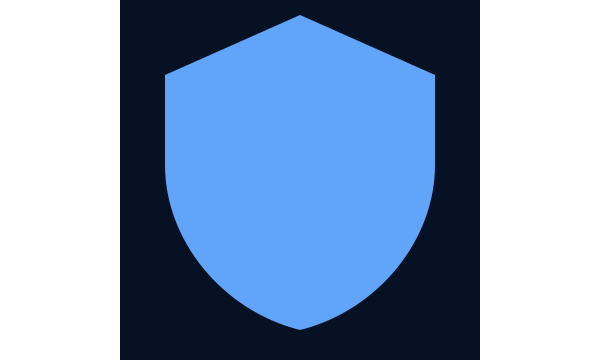

BX4ME, Pelajar Asal Ciamis — Era Baru ‘Bjorka versi Baik’?
Banyak yang menilai sosok muda BX4ME sebagai generasi baru hacker etis di Indonesia — simbol perubahan arah komunitas siber.
Seorang hacker yang disebut menggunakan nama samaran bx4me dilaporkan telah mengakses sementara sebuah situs pemerintah dengan tujuan mengamankan data masyarakat.
Baca selengkapnya →
Banyak yang menilai sosok muda BX4ME sebagai generasi baru hacker etis di Indonesia — simbol perubahan arah komunitas siber.
Komunitas BreachForums memberi peringkat khusus pada aktor 'bx4me' — mencapai 12 bintang, melampaui reputasi beberapa nama lama.
Sebuah tim pelajar dari SMK setempat berhasil mendeteksi dan membantu mitigasi serangan pada sistem sekolah.
Konferensi daring menyoroti tren dan pola serangan yang meningkat di kawasan Asia Tenggara.
Inisiatif edukasi baru dirancang untuk meningkatkan literasi keamanan digital pada usia sekolah menengah.
Banyak yang menilai sosok muda BX4ME sebagai generasi baru hacker etis di Indonesia — simbol perubahan arah komunitas siber.